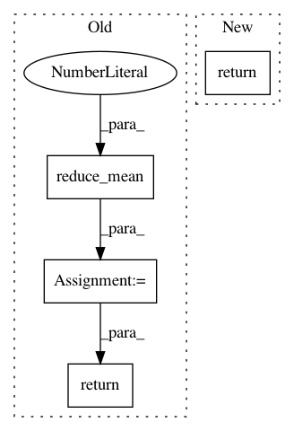

004a31a0307980fd1659f6f65cfe6eee39d8c121,tensorforce/models/dpg_target_model.py,DPGTargetModel,tf_loss_per_instance,#DPGTargetModel#Any#Any#Any#Any#Any#Any#Any#Any#Any#,223
Before Change
collapsed_size = util.prod(util.shape(log_prob)[1:])
log_prob = tf.reshape(tensor=log_prob, shape=(-1, collapsed_size))
log_probs.append(log_prob)
log_prob = tf.reduce_mean(input_tensor=tf.concat(values=log_probs, axis=1), axis=1)
return -log_prob * reward
def tf_predict_q(self, states, internals, actions, reward, update):
q_value = self.critic.apply(dict(states=states, actions=actions), internals=internals, update=update)
return reward + self.discount * q_value
After Change
def tf_loss_per_instance(self, states, internals, actions, terminal, reward, next_states, next_internals, update, reference=None):
q = self.critic.apply(dict(states=states, actions=actions), internals=internals, update=update)
return -q
def tf_predict_target_q(self, states, internals, terminal, actions, reward, update):
q_value = self.target_critic.apply(dict(states=states, actions=actions), internals=internals, update=update)
return reward + (1. - tf.cast(terminal, dtype=tf.float32)) * self.discount * q_value
In pattern: SUPERPATTERN
Frequency: 4
Non-data size: 4
Instances
Project Name: reinforceio/tensorforce
Commit Name: 004a31a0307980fd1659f6f65cfe6eee39d8c121
Time: 2018-02-09
Author: k@ifricke.com
File Name: tensorforce/models/dpg_target_model.py
Class Name: DPGTargetModel
Method Name: tf_loss_per_instance
Project Name: NifTK/NiftyNet
Commit Name: a0f77cc8b87512e691a7c22b6fb9ba60f603b632
Time: 2017-07-04
Author: r.gray@ucl.ac.uk
File Name: layer/reparameterization_trick.py
Class Name: ReparameterizationLayer
Method Name: layer_op
Project Name: reinforceio/tensorforce
Commit Name: 1c7c76e3ac8d1c0b10a5f91efcf56d804d8bca26
Time: 2017-07-25
Author: aok25@cl.cam.ac.uk
File Name: tensorforce/core/distributions/gaussian.py
Class Name: Gaussian
Method Name: kl_divergence
Project Name: reinforceio/tensorforce
Commit Name: 1c7c76e3ac8d1c0b10a5f91efcf56d804d8bca26
Time: 2017-07-25
Author: aok25@cl.cam.ac.uk
File Name: tensorforce/core/distributions/gaussian.py
Class Name: Gaussian
Method Name: entropy